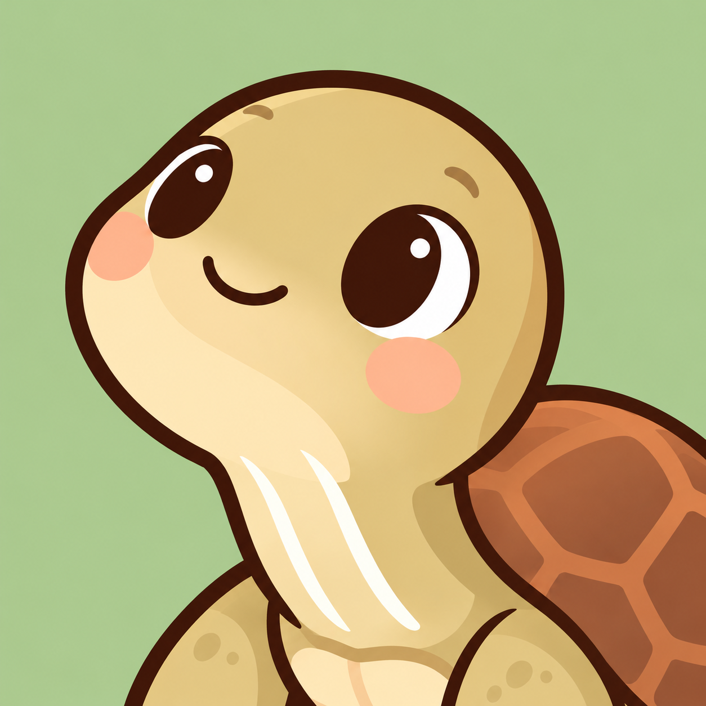
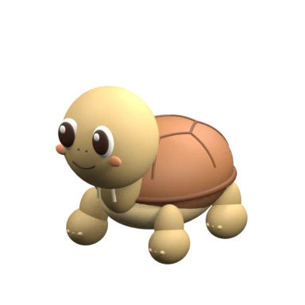

10:00 — 12:00
改好后点击下方“保存设置”。手动开工有录音时优先播放录音；恢复该情景的默认语音后，使用自定义文字。
这天还没有学习作业
专注时安静陪伴，完成后一起开心。
小乌龟会在进度条上陪你前进，点击它可以调头。

备份包含计划、记录和全部情景录音。数据保存在这台设备。
学习安排已完成
记录的专注时间
复制计划名称和时间，完成记录从新的一天开始。
计划在 12:00 结束
计划、录音和计时会保留，马上回来。